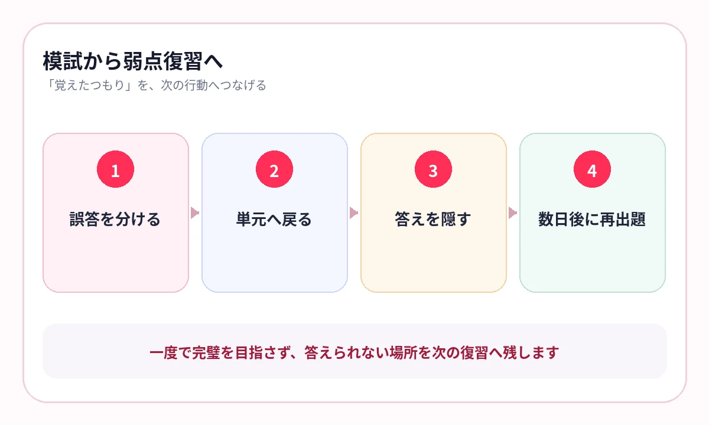

1・2年生で習った理科や社会を、「見れば分かる」状態のままにしていませんか？
高校受験では、定期テストのように直近の範囲だけを覚えればよいわけではありません。3年間の内容から、単元をまたいで出題されます。
受験勉強で必要なのは、すべてを何度も読み直すことではなく、模試や過去問で見つかった知識の穴へすぐ戻る仕組みです。
総復習は、最初から全部やり直さない
受験勉強を始めると、1年生の教科書から順番に読み直したくなります。しかし、覚えている単元まで同じ時間をかけると、弱点へ届く前に時間が足りなくなります。
- 模試・実力テストで穴を見つける
- 誤答の原因となった単元へ戻る
- 用語と図表を答えられるか確認する
- 数日後にもう一度出題する
復習の入口は教科書の1ページ目ではなく、直近の誤答です。
理科は、分野をまたいで分類する
理科は、生物・地学・化学・物理の分野ごとに知識を整理します。学校の学年順ではなく、同じ分野をまとめて見直すと、似た現象や公式の違いが見えます。
生物・人体
名称、働き、図の位置関係をセットで確認します。
地学・天気
現象、観測データ、原因と結果をつなげます。
化学・物理
用語、法則、単位、条件を比較して覚えます。
{kind=link}

社会は、時代・地域・制度を横断する
歴史は年表だけ、地理は地名だけ、公民は用語だけでは、資料問題に対応しにくくなります。
- 歴史：出来事の前後と、変化した制度を答える
- 地理：地域の条件と、産業・人口・貿易をつなぐ
- 公民：制度の主体・役割・関係を図で確認する
単元名で教材を分けておくと、模試で「江戸後期が弱い」「天気図が弱い」と分かった瞬間に戻れます。
横にスワイプして画像を確認できます


模試を受けた日が、次の暗記計画になる
当日
誤答を、知識不足・読み違い・計算・時間不足に分けます。
翌日
知識不足の単元だけ、教材へ戻って答えを確認します。
数日後
答えを隠し、同じ知識をもう一度取り出します。
次の模試前
過去の「あやしい」単元だけを短く回します。
模試の点数だけを見るのではなく、次に戻るページを決めて終えてください。
入試直前は、弱点リストを薄くする
AI暗記シートでは、理科・社会の教材を写真やPDFから保存し、単元名で検索できます。出題結果を残せるため、覚えている教材と不安な教材を分けられます。
直前期に全範囲を再び広げるのではなく、「覚えていない」が残る教材を少しずつ減らします。
よくある質問
高校受験の理科・社会はいつから総復習すべきですか？
開始時期より、模試や実力テストの誤答を単元へ戻す習慣が重要です。早い段階から弱点教材を残すと、直前の総復習が軽くなります。
教科書を最初から読み直す必要はありますか？
一度全体を確認することは有効ですが、毎回最初から戻る必要はありません。誤答した単元と不安な単元を優先します。
暗記だけで入試問題に対応できますか？
知識を答えられる状態は土台です。その上で、資料問題、計算、記述、過去問演習で知識を使う練習を重ねます。
参考情報
試験範囲・制度は公式情報、復習方法は学習科学の研究を参照しています。
3年間の教材を、直前に探さない
模試で見つけた弱点へ、すぐ戻る
理科・社会の教材を単元ごとに保存し、答えを隠して出題。入試前は不安な教材から繰り返せます。
iPhone・iPad対応／3枚まで無料保存／継続利用は800円の買い切り